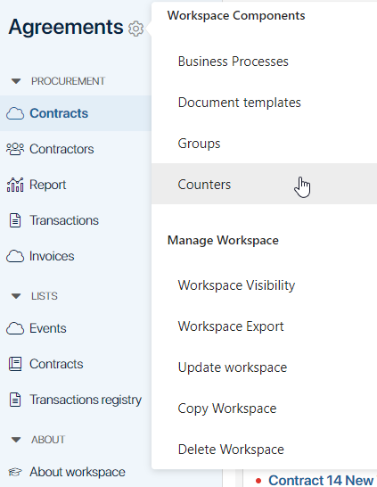
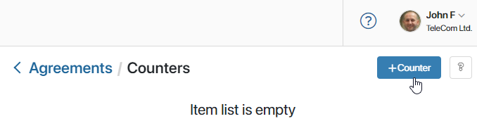
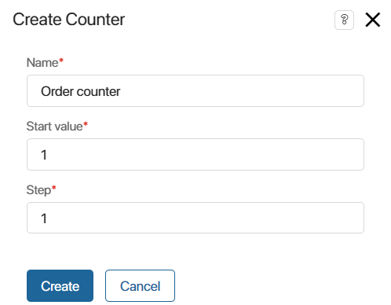
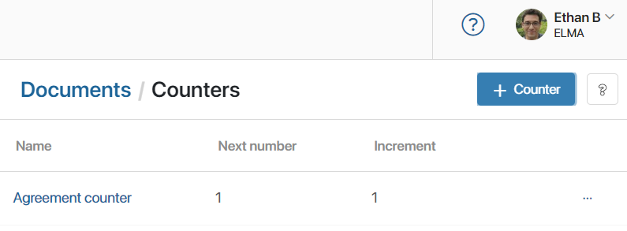
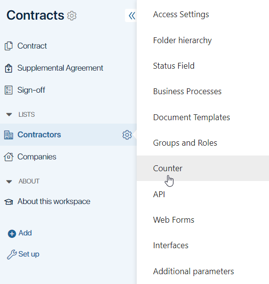
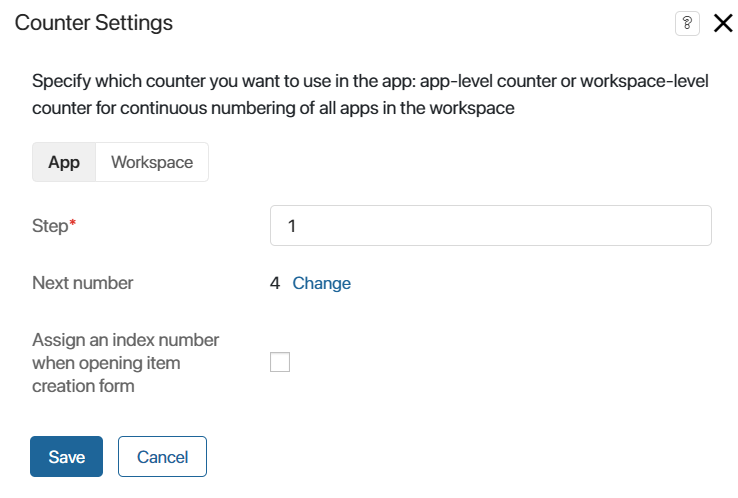
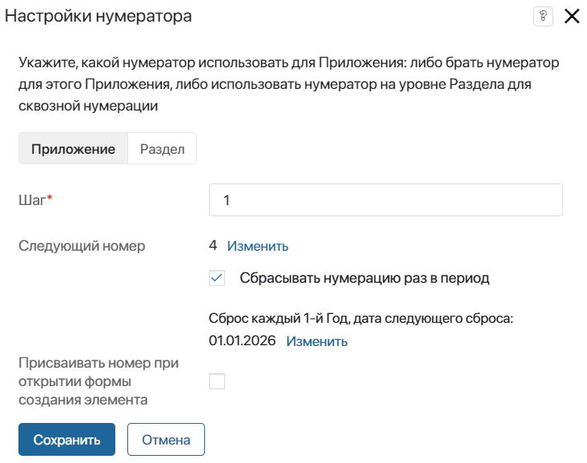
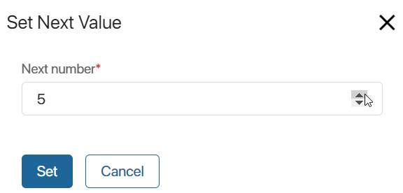

Counters are sets of rules for generating serial numbers of app items. For example, they can be used to generate item names by template.
Counters can be configured for workspaces and apps. Workspace counters are used for continuous numbering of items stored in several apps within a workspace, whereas app counters are applied to items within one app.
начало внимание
If a workspace counter is used for numbering in several apps, these apps cannot be exported individually.
конец внимание
Workspace counters
A counter created within a workspace allows for continuous numbering of items across multiple apps. To create a workspace counter:
- Click the gear icon next to the workspace name and select Counters.

- On the page that opens, click +Counter.

- Fill out the fields:

- Name*. Enter a name for the counter, for example, Agreement counter.
- Start value*. Specify the value that numbering will start from, for example, 1.
- Step*. Specify the step with which the numbers will be assigned to the items. For example, if the step is 1, numbers will be assigned in the following sequence: 1, 2, 3, 4, etc.
- Click Create to apply the changes.

- Within the workspace, open the apps that you wish to link with continuous numbering. In the settings of each app, specify the created workspace counter.
To set different numbering for separate groups of apps, configure multiple counters in the workspace.
App counters
A counter in an app assigns sequential numbers to items stored in the Index system field from the app context.
You can configure:
- Numbering of items within one app.
- Continuous numbering for items in multiple apps within a single workspace.
To configure a counter:
- Click the gear icon next to the app name and select Counter in the menu.


- Step*. Specify the step with which numbers are assigned to items.
- Next number. The value from which numbering will start or continue. It can be changed.
- Assign an index number when opening app creation form. Enable this option so the number is assigned at the moment the item creation form is opened, not after saving it. For example, to ensure the item name, including its number, is formed immediately and does not change after saving. The number is considered used, even if the user closed the creation form. Therefore, enabling this setting may result in gaps in numbering.
- Click the Workspace tab to configure continuous numbering of items across multiple apps within a single workspace:
- Counter*. Specify the counter created for the workspace. Its settings will be used for the numbering of items in the app.
- Assign an index number when opening item creation form. Enable this option so the number is assigned at the moment the item creation form is opened, not after saving it. The number is considered used, even if the user closed the creation form. Therefore, enabling this setting may result in gaps in the numbering.
- Click Save.
The counter settings will be applied for all subsequently created items.
Edit counter settings
After saving the settings, sequential numbers are automatically assigned to app items. You can edit a counter.
For the app, change the settings as described in the App counters section.
To edit the counter created for a workspace, click the gear icon next to the workspace name and select Counters. Open the counter from the list, edit its name and step, then click Save.
The new settings will be applied for assigning numbers to new items.
Set the next value
You can manually set the sequential number from which numbering will continue. For example, to reset the numbering, you can set the value to 1.
For an app counter, go to its settings, and in the Next number field, click Change. Enter the new value and save the settings.
For the workspace, go to the list of counters. Next to the counter name, click the three dots icon and select Set Next Value.

In the window that opens, enter the desired next number and click Set to apply the changes.

Continuous numbering of items will continue from the specified value.
Found a typo? Select it and press Ctrl+Enter to send us feedback